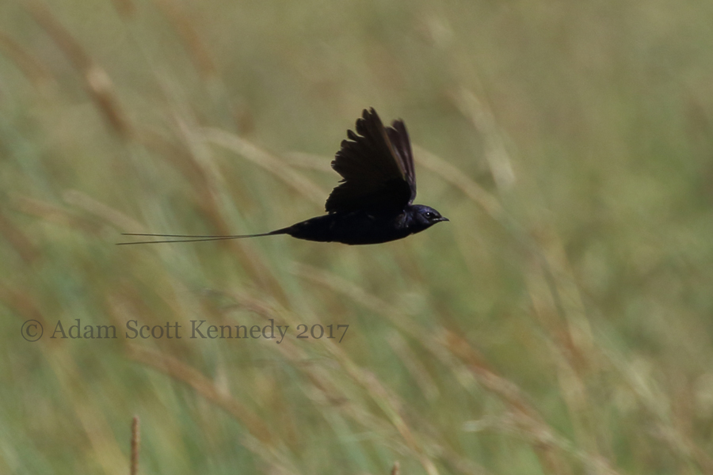
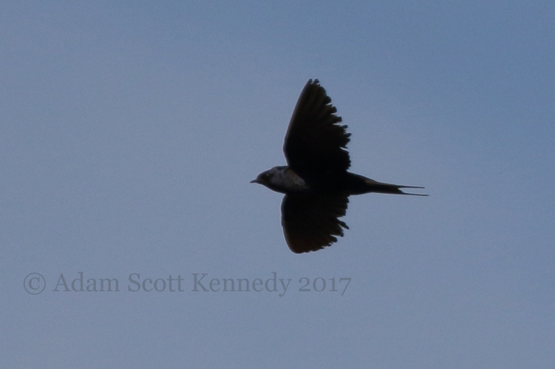
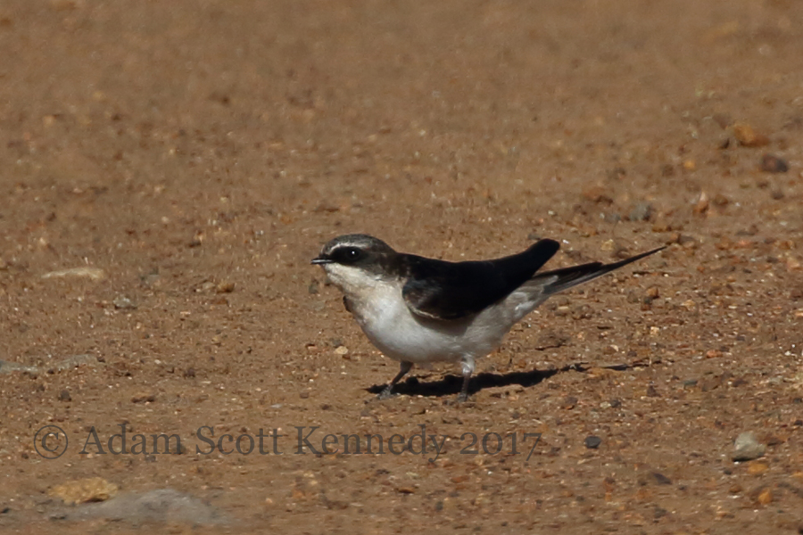
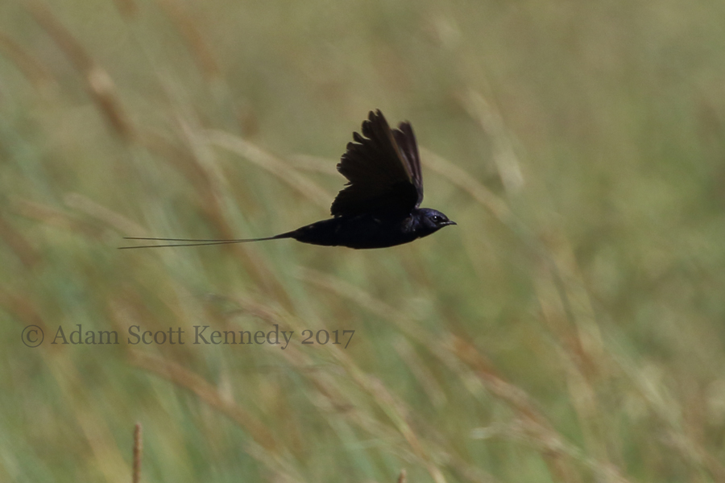
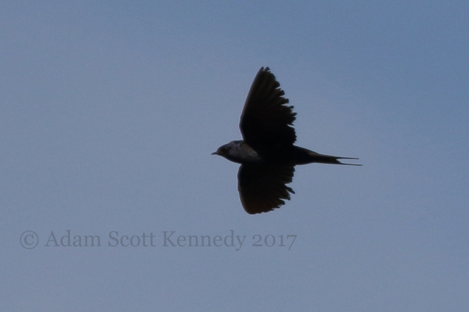
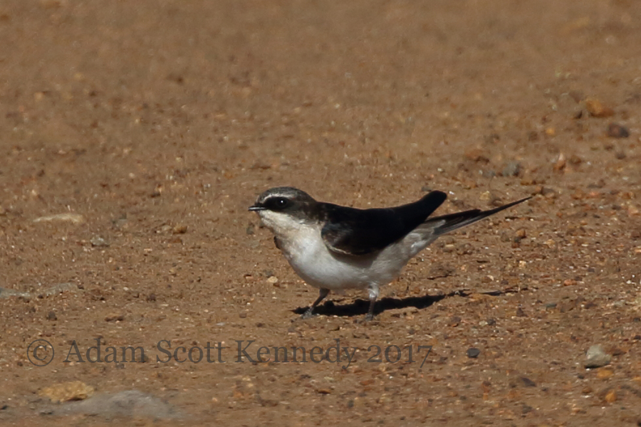

Dear All,
Please find attached images of Blue Swallows that I located in the Mara Conservancy (aka Mara Triangle) this morning.
First, a male with long streamers was seen briefly then another with short streamers. Then a female-type and then more down the same track. I estimate that there were at least 10 birds in total, incuding two males with long streamers.
As the images show, these birds are looking tatty and just about ready to moult.
 




